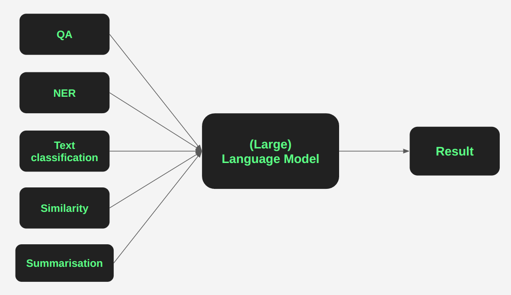

Key Architectural Differences
Model Size
- Small: 7B-13B parameters (efficient, fast)
- Medium: 30B-70B parameters (balanced)
- Large: 175B+ parameters (highest capability)
Training Approaches
- Base models: Raw text prediction
- Instruct models: Fine-tuned for following instructions
- RLHF models: Human feedback optimization

Specialized Variants
- Code-specialized: Trained on programming languages
- Multilingual: Optimized for multiple languages
- Long-context: Enhanced for processing long documents
- Reasoning-focused: Improved logical and mathematical capabilities